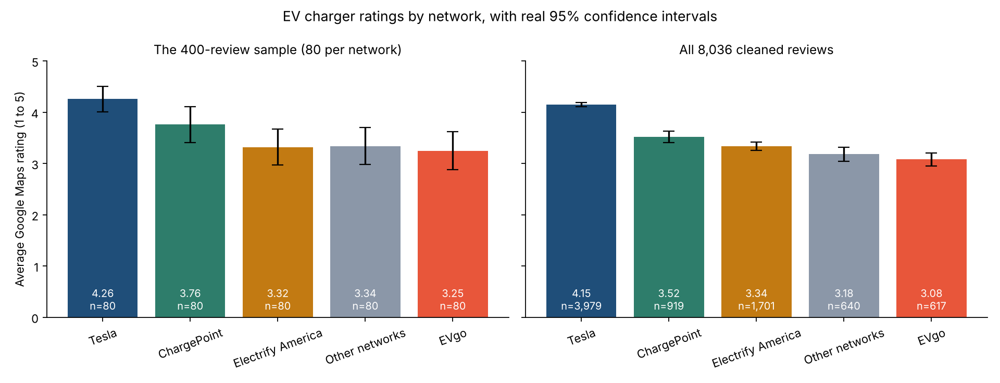
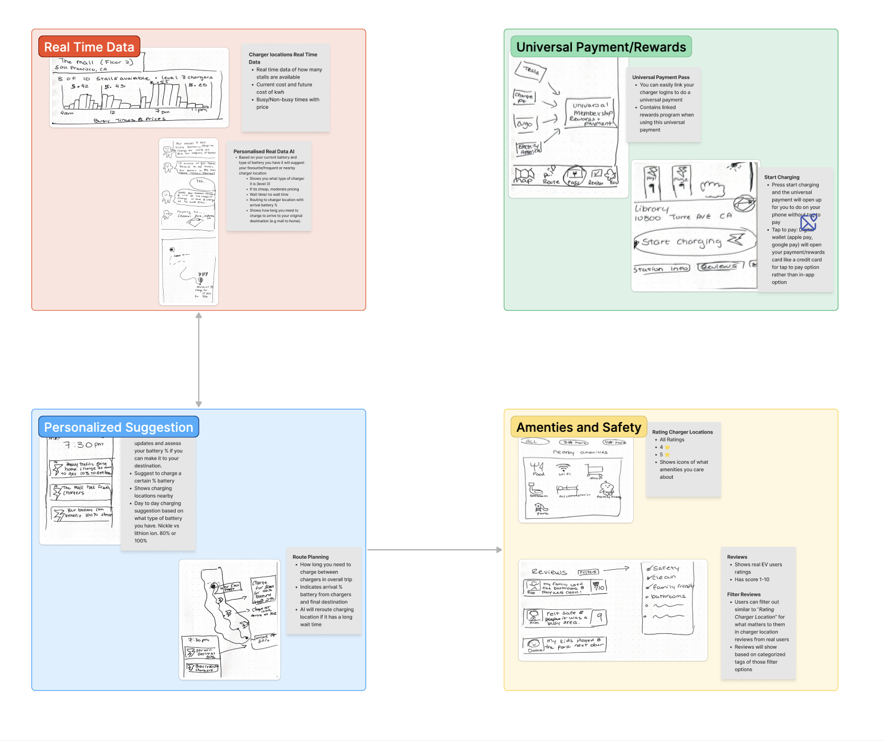
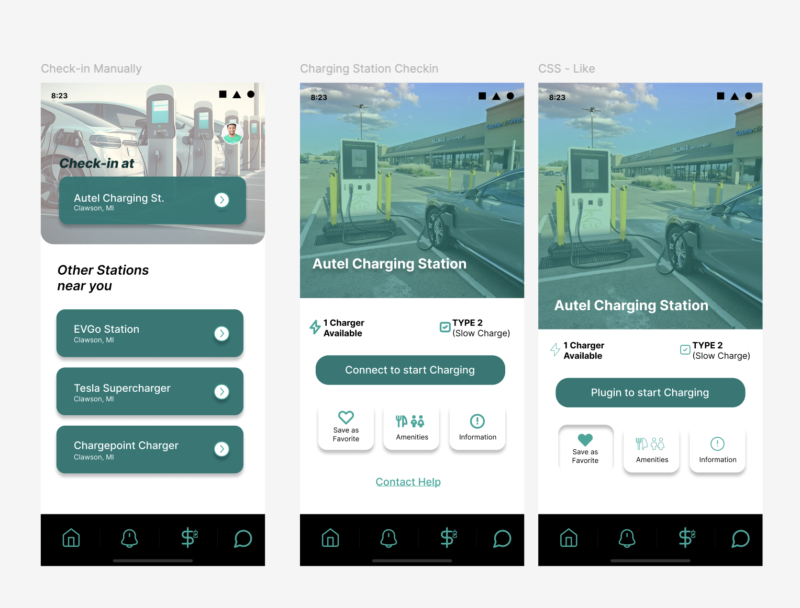
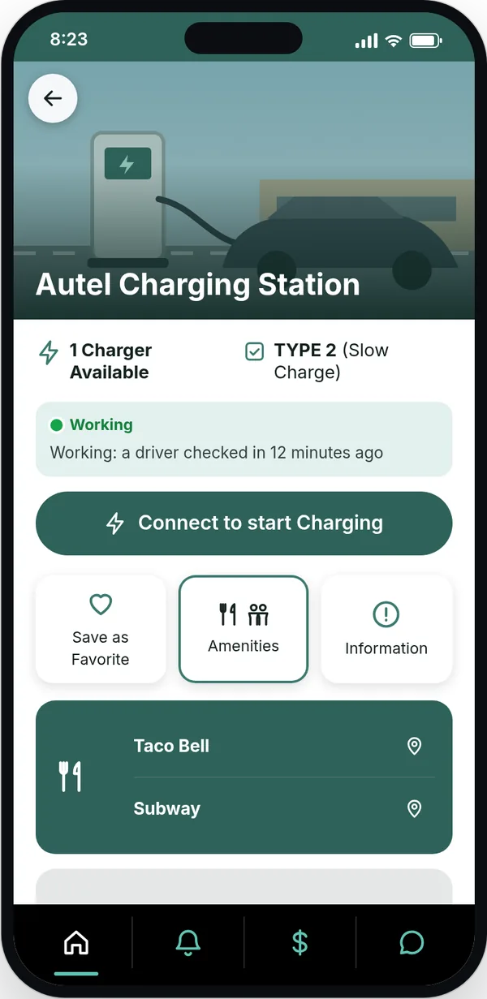

One app for every charger
EV drivers juggle apps to find a charger that works, fits their car and takes their payment. Our team of 4 started from data: 16,767 Google Maps reviews of charging stations, cleaned in Google Colab, plus a literature review. Then we designed one app for the whole stop and tested it with 10 drivers.
A different app, card or membership for every charging network
One app to find, check in, charge and pay, tested with 10 drivers

The problem
Too many apps, and no way to know
Each charging network wants its own app, card or membership. Drivers can't tell if a charger works until they arrive, and no app says whether a station feels safe at night.
From Plug In America's 2023 driver survey and J.D. Power's 2023 public charging study, which we reviewed.
Research at scale
16,767 reviews, studies and apps
We collected 16,767 Google Maps reviews of US charging stations. Alongside them, we reviewed peer-reviewed studies and industry reports since 2012, summarized with AI, plus EV owner forums, and compared Tesla, ChargePoint, Electrify America, PlugShare and EVgo.
- No app put safety and amenities first.
- Apps that cover every network, like PlugShare, had information but no way to pay.
- Network apps took payment, but only on their own network.
Synthesis
Four themes from the data and the papers
Range anxiety
The fear of running out of charge, worst on long trips.
Reliability
Charging speed, compatibility, and whether a charger works.
Payment
A different app or card for each network.
And a fourth: safety and amenities, lighting, restrooms and food nearby. Tesla's higher ratings pointed at what drivers expected everywhere: chargers that work and payment that just happens.
- 8,036 recent US reviews coded into 11 themes, with sentiment scored by an AI model
- Reviews about broken chargers average 2.25★, against 3.72★ for all reviews
- Broken chargers come up in 4.4% of Tesla reviews and 22.5% of Electrify America reviews

Decisions log
Familiar maps, clear status, one wallet
Each of us sketched 4 ideas in 4 minutes, and we voted on the features to keep. We built the screens in Figma, guided by 4 usability rules: familiar patterns like Google Maps, clear system status, user control, and preventing errors, like checking that a charger fits your car.

One payment for every network
Each network wanted its own app, card or membership. Here you check in and pay in one place, with no RFID card.
The hardest task in testing, so it changed afterwards.

Show what's around the charger
Many drivers, especially women, worry about safety at quiet stations, and families need places to stop. So every station shows what is around it before you drive there.
Testers praised it across the board.

Plan the trip, chargers included
Range anxiety peaks on long trips in unfamiliar places. So you enter where you're going and see chargers along the route, with live traffic.
New EV drivers praised how simply it previews stops.
Usability testing
10 drivers, 3 tasks
We tested with 10 people: 5 new to EVs and 5 experienced drivers. Each found a nearby charger, found the battery health page, and charged and paid, thinking out loud while we timed them. Then everyone filled in the SUS survey.
Pay like the apps drivers already trust
Experienced drivers took 109.66 seconds to charge and pay, and rated it 3.66 out of 5. They expected payment to work like Tesla's: set up once, then automatic. So payment now uses your default method, and a pay button stays on screen.
Words people actually use
"Phantom battery" confused people, so it became "stand-by", and the battery page got a simpler layout.
Results and learning
What worked, and what came next
Range anxiety is about trust
Reliable information calms drivers more than a bigger battery would.
Beginners and experts differ
New drivers loved the simplicity. Experienced drivers measured us against Tesla.
Amenities were the surprise
The feature no other app had was the one every tester praised.
Predict broken chargers
Learn from driver reports and history, and warn you before you drive to a charger that is likely down.
A hands-free trip assistant
Ask out loud for the next working charger with food nearby, without touching the screen.